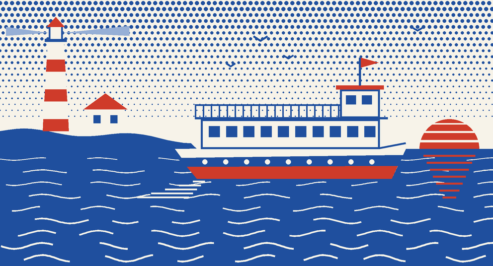

<div style="position: relative; width: 576px; height: 864px; overflow: hidden; background: #f7f3e9; font-family: 'Libre Franklin', 'Franklin Gothic', Arial, sans-serif; color: #1b2f52">
<div style="position: absolute; left: 44px; top: 42px; width: 488px; display: flex; justify-content: space-between">
  <div style="font-weight: 700; font-size: 13px; letter-spacing: 0.2em; color: #cf3b2a">CAPE COD, MASS.</div><div style="font-weight: 700; font-size: 13px; letter-spacing: 0.2em; color: #cf3b2a">SEASON OF 1984</div></div>
<div style="position: absolute; left: 44px; top: 64px; width: 488px; height: 3px; background: #1f4f9e"></div>
<div style="position: absolute; left: 44px; top: 76px; width: 488px">
  <div style="font-family: 'Fraunces', Georgia, serif; font-style: italic; font-weight: 800; font-size: 66px; line-height: 1; color: #1f4f9e; letter-spacing: -0.01em">Cape Bay</div>
  <div style="display: flex; align-items: center; gap: 12px; margin-top: 6px">
    <div style="font-weight: 700; font-size: 18px; letter-spacing: 0.3em; color: #cf3b2a">EXCURSION LINE</div>
    <div style="flex: 1; height: 2px; background: #cf3b2a"></div></div>
</div>

<div style="position: absolute; left: 44px; top: 456px; width: 488px">
  <div style="display: flex; justify-content: space-between; align-items: baseline; margin-bottom: 8px">
    <div style="font-weight: 700; font-size: 14px; letter-spacing: 0.2em; color: #1f4f9e">DAILY FROM THE TOWN PIER</div>
    <div style="font-weight: 600; font-size: 14px; letter-spacing: 0.04em; color: #1f4f9e">June to September</div></div>
  <div style="padding: 9px 0; border-top: 2px solid #1f4f9e">
      <div style="display: flex; justify-content: space-between; align-items: baseline; gap: 14px">
        <div style="font-family: 'Fraunces', Georgia, serif; font-weight: 600; font-size: 21px; line-height: 1.12; color: #1f4f9e">Harbor and seal cruise</div>
        <div style="font-weight: 700; font-size: 16px; white-space: nowrap; color: #cf3b2a">10:00, 12:00, 2:00, 4:00</div></div>
      <div style="margin-top: 3px; font-size: 16px; line-height: 1.3">One hour round the bay. Look out for seals and the odd surprise.</div></div><div style="padding: 9px 0; border-top: 1px solid rgba(31,79,158,0.45)">
      <div style="display: flex; justify-content: space-between; align-items: baseline; gap: 14px">
        <div style="font-family: 'Fraunces', Georgia, serif; font-weight: 600; font-size: 21px; line-height: 1.12; color: #1f4f9e">Sunset lobster supper cruise</div>
        <div style="font-weight: 700; font-size: 16px; white-space: nowrap; color: #cf3b2a">6:30 nightly</div></div>
      <div style="margin-top: 3px; font-size: 16px; line-height: 1.3">Two hours. Supper from the galley, served on the top deck.</div></div>
  <div style="border-top: 2px solid #1f4f9e; padding-top: 9px; font-size: 16px; line-height: 1.35">
    <b style="font-weight: 700; color: #1f4f9e">Fares</b>&nbsp; Adults 5.00, children under twelve 2.50. Supper is extra.</div>
</div>
<div style="position: absolute; left: 44px; top: 678px; width: 488px; box-sizing: border-box; border: 2px solid #cf3b2a; padding: 12px 16px 13px">
  <div style="position: absolute; left: 14px; top: -10px; background: #f7f3e9; padding: 0 8px"><div style="font-weight: 700; font-size: 13px; letter-spacing: 0.2em; color: #cf3b2a">ON BOARD, PLEASE</div></div>
  <div style="font-size: 16px; line-height: 1.32; font-weight: 500"><div style="display: flex; gap: 10px; margin-top: 0px"><span style="width: 8px; height: 8px; margin-top: 7px; flex: none; background: #cf3b2a; display: block"></span><span>Hold on to hats, wallets and children.</span></div><div style="display: flex; gap: 10px; margin-top: 4px"><span style="width: 8px; height: 8px; margin-top: 7px; flex: none; background: #cf3b2a; display: block"></span><span>Children stay behind the rail at all times.</span></div><div style="display: flex; gap: 10px; margin-top: 4px"><span style="width: 8px; height: 8px; margin-top: 7px; flex: none; background: #cf3b2a; display: block"></span><span>No swimming from the boat.</span></div></div>
</div>
<div style="position: absolute; left: 44px; top: 800px; width: 488px; display: flex; justify-content: space-between; align-items: baseline">
  <div style="font-family: 'Fraunces', Georgia, serif; font-style: italic; font-weight: 600; font-size: 18px; color: #1f4f9e">Sailing the bay since 1964.</div>
  <div style="font-weight: 700; font-size: 13px; letter-spacing: 0.18em; color: #cf3b2a">GALLEY MENU OVER</div></div>
</div>